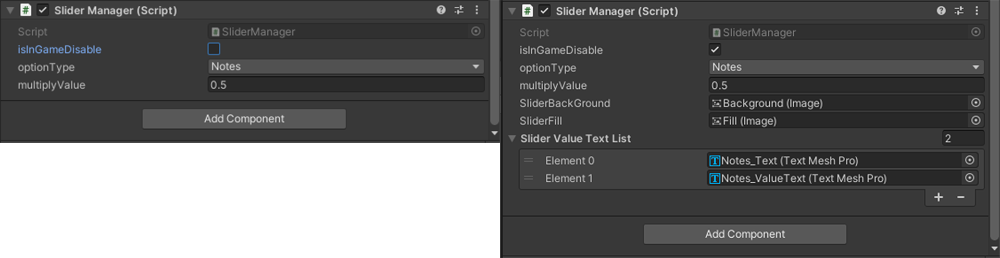
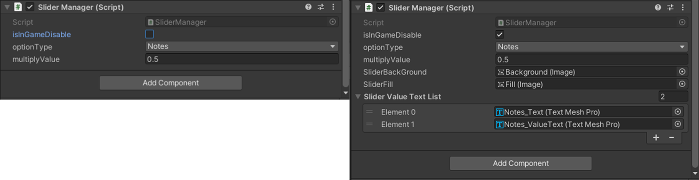

Kill The Beat
今回のプロジェクトでは「テックリーダー」として務めさせていただきました。
主な仕事としては、みんなのプログラムのアドバイス&修正をかける事でした。
他にはシステムの設計をしたり、後半からタスクの管理部分、マージ部分を担当するようになりました。
GameManager部分
GameManagerでは、ほぼほぼデータを保持することしかやっていません。
当時ポーズ処理を追加したいのですが、新しくスクリプトをわざわざ用意するのも…? と思いGamaManagerに実装しました。


リザルトで使うデータなどを初期化する処理も、ミュージックセレクト画面に移行したら初期化するようになっています。
ここではUnirxを使用し.Subscribe()でイベントを登録しています。

Option画面
Option画面では、各パラメータを調整できるように、Sliderで実装しました。
ゲーム中はタイミングを変更できないように設定されています。
左の文字は、曲のイメージカラーに合わせて色が変わります、値はGameManagerから取得できます。

パラメータの変数はすべてUnirxのReactiveProperty()で定義し、変更がかかった場合イベント発行するようになっています。
ここでは変更されたら、サウンド関係にイベント発行しています。


リザルトシーン
数値の部分はResultManagerクラスが変更をしているだけなので特に目立った部分はありません。ここではShader Graphで書いた部分を紹介します。
デザイナーの要望に合わせて、「中の色の部分を2色のグラデーションで回転してほしい」と要望いただきました。
図に書いてあるように、処理としてはすごくコンパクトにできたと思います。

インスペクタ拡張
個人的に今回チャレンジしてみたかった機能です。
スイッチ一つのON/OFFで要らない設定を消したり、表示させたりすることができます。
将来的にはもう少し勉強を重ね、便利機能をインスペクタ上に実装出来たらいいなと考えています。
 

クラス拡張
これもチャレンジしたかった部分です、便利機能(ここではフェイド機能のことを指しています)を自作で作ってみたかったので入れてみました。
使っていては問題ないのですが、現在がフェイド中かどうかは不明のと、外からはvoid関数呼んでいるため、コルーチンで待つことができないところが不便でした。
結果としてはあまり使っていないですが。クラスに機能追加できた観点では成功です、今後ではこの便利機能をより良くしていきたいと思っています。